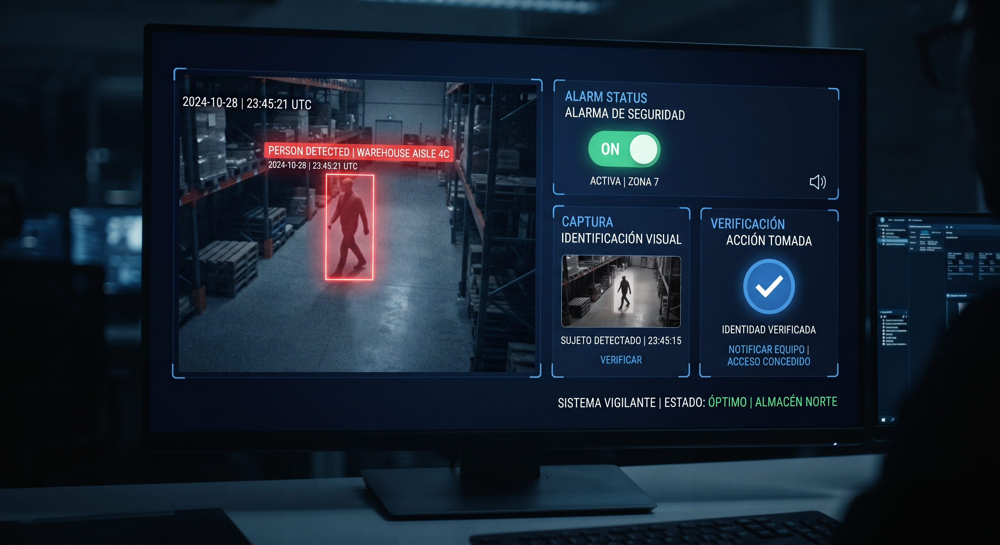
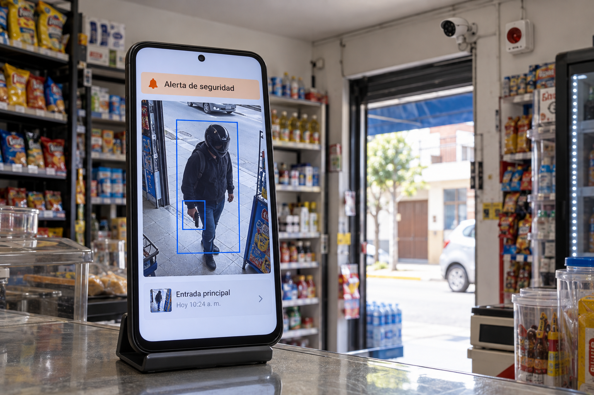
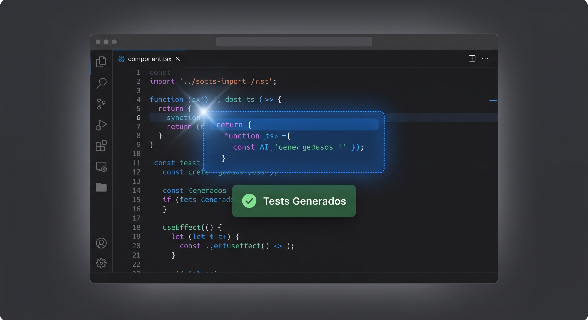
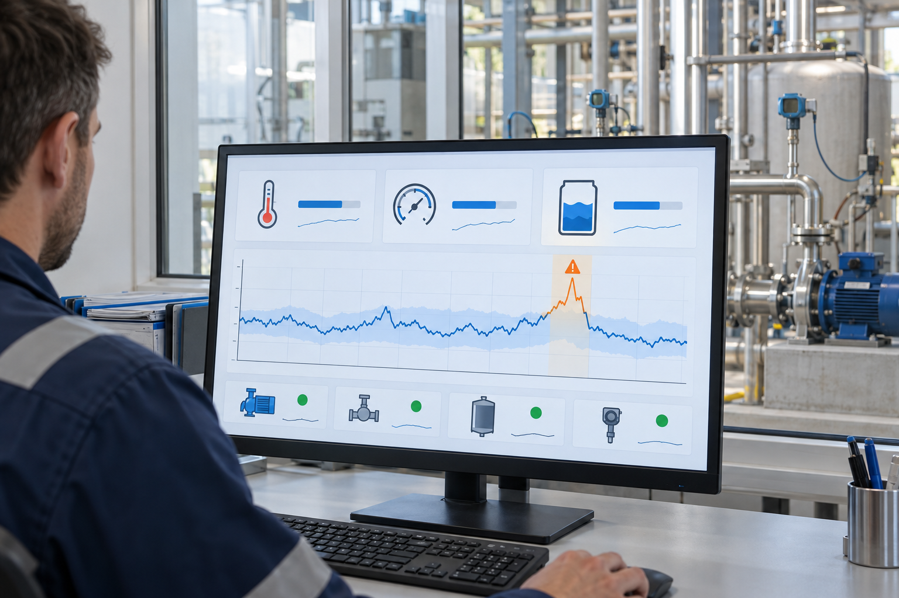
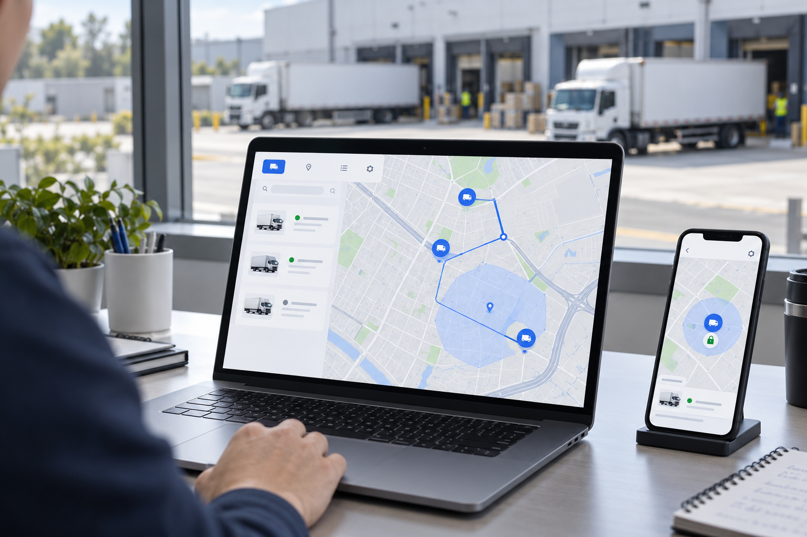

KreaLab TECH · Inteligencia artificial
La IA que cuida su negocio, acelera su software y controla sus activos
Detección de riesgos, desarrollo asistido, telemetría y gestión de flotas, en un solo lugar y a un costo accesible.
Solicitar demostración →Ver servicios
Servicio 01 · Seguridad con IA
Anticípese ante la presencia de delincuentes armados
Un negocio pequeño no puede tener vigilancia las 24 horas. La IA sí puede mirar de forma continua: usted decide cómo actuar, con la información a tiempo.
- Alerta automática, con apoyo de IA de última generación
- Alarma sonora local que disuade y avisa a vecinos y habitantes
- Mensaje con foto a los dueños y al personal de seguridad
- Costo asequible para bodegas, pequeños negocios y choferes

Tres acciones en una sola alerta
Anticipa
La IA detecta la presencia de personas armadas sin que nadie pulse un botón.
Disuade
Se activa una alarma sonora local y se avisa de inmediato a vecinos y habitantes.
Informa
Llega un mensaje con foto a los celulares de los dueños y del personal de seguridad.
Herramienta de apoyo: ante una emergencia, llame a las autoridades.
Servicio 02 · Desarrollo con IA
Su equipo entrega más, con el control en sus manos
Las tareas repetitivas consumen horas de ingeniería. El asistente se encarga de lo repetitivo y las personas aprueban cada cambio.
- Sugerencias de código dentro del editor que ya usa
- Revisión automática antes de la revisión humana
- Pruebas generadas y documentación al día
- Usted define qué código puede analizarse

De la idea al código aprobado
Escribe
Propone y completa código mientras su equipo trabaja.
Revisa
Señala errores y mejoras antes de que lleguen a producción.
Prueba y documenta
Genera pruebas y mantiene la documentación actualizada.
Servicio 03 · Telemetría
Vea el problema antes de que lo note su cliente
Reúna señales de dispositivos, servidores y aplicaciones en un solo panel, y deje que la IA señale lo que se sale de lo normal.
- Métricas y registros de equipos y aplicaciones
- Paneles en tiempo real en PC, tablet y celular
- Detección de anomalías con IA
- Alertas por correo o chat

Información útil, justo a tiempo
Recolecta
Datos continuos de sus sistemas y sensores.
Detecta
La IA identifica comportamientos fuera de lo normal.
Alerta
Su equipo recibe el aviso y actúa a tiempo.
Servicio 04 · Flotas y activos
Control total, aunque la unidad esté lejos
Gestione su logística de transporte y proteja sus activos valiosos desde cualquier PC, laptop, tablet o celular.
- Seguimiento en tiempo real de unidades, paquetes y activos
- Monitoreo de sensores en unidades fijas o móviles
- Bloqueo remoto de puertas y apagado remoto del motor
- Control de entrada y salida de zonas de seguridad

Sepa dónde está y qué pasa con lo suyo
Ubica
Siga unidades y activos en tiempo real desde su pantalla.
Protege
Bloquee puertas y apague el motor a distancia cuando haga falta.
Controla zonas
Reciba avisos de entrada y salida de áreas seguras.
El bloqueo y el apagado remoto deben usarse según protocolos de seguridad y la normativa aplicable.
¿Quién usa KreaLab TECH?
Bodegas y minimarkets
Alertas y alarma local para proteger el local y avisar al vecindario.
Pequeños negocios
Seguridad con IA a un costo accesible y sin equipos complejos.
Choferes y transportistas
Seguimiento, alertas y control antirrobo de la unidad.
Equipos de TI y operaciones
Asistente de desarrollo y telemetría para trabajar con más control.
Cómo empezar
Cuéntenos su caso
Escríbanos qué necesita proteger o mejorar.
Demostración
Una reunión de 30 minutos para ver el servicio.
Instalación
Configuramos el servicio según su negocio.
Soporte
Le acompañamos mientras lo usa.